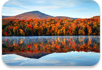
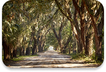

Upstate
Strong conservative areas with steady Republican support containing cities such as Greenville and Spartanburg.
Click on the region to view detailed county information and historical voting data.

Strong conservative areas with steady Republican support containing cities such as Greenville and Spartanburg.
Diverse voting history with a mix of Urban and Rural also contains the States Capital.

Historic Democratic strongholds with higher population centers containing major cities such as Myrtle Beach and Charleston.
Total Counties
Registered Voters (2024)
Voter Turnout (2024)
First Election in SC